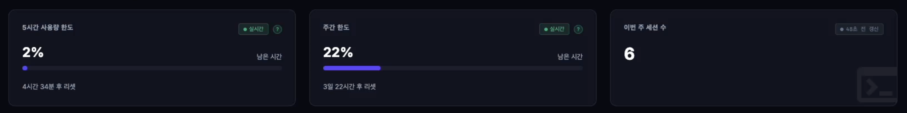
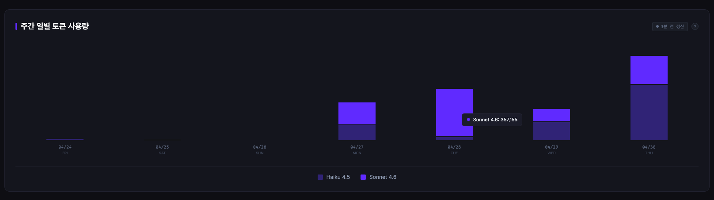
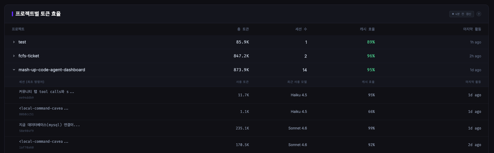
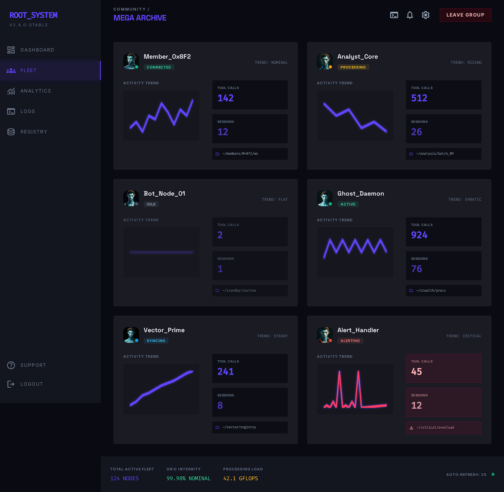

Claude Code 훅 → 로컬 서버(SSE) → 브라우저 캔버스. 매숑이가 도구 사용·태스크·토큰까지 한눈에 보여줍니다.
./start.sh → http://localhost:4321
매숑이 작업실 → 사용량 & 비용 → 그룹 대시보드까지, 실제로 켜둔 화면입니다.




Claude Code 훅 이벤트를 받아 픽셀아트 마스코트로 세션 상태(idle / thinking / running / compacting / ended)를 실시간 표시.
~/.claude/projects/**.jsonl을 SQLite에 증분 적재해 일별·모델별·프로젝트별 토큰과 캐시 효율을 집계.
MySQL 백엔드 위에 회원가입·그룹·초대 코드·그룹 대시보드 SSE까지 옵션으로 제공.
Claude Code ──(hook)──▶ hook-handler.sh ──HTTP──▶ server.js
│
├─ /api/stream (세션 SSE)
├─ /api/usage/stream (사용량 SSE)
├─ data/session_*.json (세션 영속화)
├─ data/usage.db (JSONL → SQLite)
└─ MySQL (커뮤니티 옵션)
│
▼
브라우저 (캔버스 + 매숑이)
| 명령 | 설치 의존성 | 비고 |
|---|---|---|
./start.sh | 로컬만 (express, better-sqlite3, chokidar, dotenv) | 처음 실행 시 자동 설치 후 기동 |
./start.sh --community | 로컬 + 커뮤니티 (mysql2, bcrypt, express-session) | MySQL 환경에서 사용 |
./start.sh install[:community] | 의존성만 설치 | 서버는 기동하지 않음 |
./setup-hooks.sh | — | ~/.claude/settings.json에 훅 머지 설치 |
./start.sh stop / status | — | 서버 종료 / 상태 확인 |
💡 커뮤니티 의존성이 없거나 MySQL이 미연결이면 /api/auth·/api/community가 503 community_disabled를 반환합니다. 그 외 기능은 정상 동작.
hook-handler.sh가 PascalCase 훅을 snake_case 이벤트로 변환해 POST /api/events로 전송.
| Claude Code 훅 | 변환된 이벤트 | 서버 처리 |
|---|---|---|
SessionStart | session_start | 세션 등록 · startedAt 설정 (재접속 복구) |
SessionEnd | session_end | 종료 · 토스트 · 3초 뒤 메모리 제거 |
PreToolUse | pre_tool_use | 마스코트 → running, 도구명·인자 표시 |
PostToolUse | tool_use | 도구 카운트 · 수정 파일 · Bash 히스토리 · Task 갱신 |
Notification (승인 대기) | permission_request | "승인 대기" 토스트 + 브라우저 Notification |
Stop | stop | 응답 완료 · idle · thinking 누적 |
PreCompact | pre_compact | 마스코트 → compacting |
StatusLine | statusline_update | 5h / 7d 레이트 리밋 사용률 갱신 |
{
"event": "tool_use",
"session": {
"pid": "<session_id>",
"sid": "<session_id>",
"cwd": "<현재 작업 디렉토리>",
"name": "<basename 또는 $CLAUDE_SESSION_NAME>"
},
"data": { /* 원본 훅 stdin JSON */ }
}
pid/sid는 동일하게 Claude의 session_id를 사용 — 재접속 시 startedAt 복구 키로 활용AGENT_VIZ_PORT (기본 4321), CLAUDE_SESSION_NAMEsession_start는 서버 기동 직후를 대비해 1초 간격 5회 재시도setup-hooks.sh로 settings.json에 한 번에 머지 설치 (기존 훅·env·permissions 보존, .bak 백업)세션마다 픽셀아트 마스코트가 떠다닙니다. 도구 실행·태스크·기분 멘트가 말풍선에 흐르고, 컴팩션·승인·완료 같은 중요한 이벤트는 일반 멘트가 덮어쓰지 않도록 우선순위를 둡니다.
mascot-default.png / mascot-move.png / mascot_waiting.pngidle ⇄ thinking ⇄ running ⇄ compacting ⇄ ended
data/session_<sid>.json 파일 단위INACTIVE_TIMEOUT_MS(3분) 초과 미마감 세션을 봉합ended 처리TaskCreate / TaskUpdate 이벤트로 세션당 최대 50개. 24시간 지난 완료 태스크는 자동 아카이브.
Write, Edit 대상 + 빈도)thinking_start → thinking_end/stop)git / package / runtime / infra / shell / build / test / lint / other
~/.claude/projects/**.jsonl 로그를 SQLite(data/usage.db)에 증분 적재하고, 메모리 집계(usageState)에서 SSE로 실시간 브로드캐스트.
StatusLine 훅의 rate_limits를 그대로 카드에 반영. 리셋까지 남은 시간도 함께 표시.
최근 7일을 모델별 색상으로 구분한 스택 막대. 어떤 모델을 얼마나 썼는지 한눈에.
총 토큰·세션 수·캐시 효율·마지막 활동. 아코디언으로 세션 단위까지 드릴다운.
데이터 출처: StatusLine 훅의 rate_limits.five_hour / rate_limits.seven_day
데이터 출처: ~/.claude/projects/**/*.jsonl 의 assistant usage 레코드
cacheEfficiency = cache_read_tokens / (input_tokens + cache_creation_tokens + cache_read_tokens)
offset → 끝 증분 읽기 (\n 0x0A 기반 라인 분리)usage_records INSERT + file_offsets UPDATE → 원자성 보장
💡 Buffer 기반 파서라서 한글·이모지가 들어간 라인에서도 오프셋이 어긋나지 않음. chokidar는 macOS는 FSEvents, Linux는 inotify를 추상화.
OTEL_EXPORTER_OTLP_ENDPOINT)👉 우선 로그 파일 기반으로 채택. 실시간성이 더 중요해지면 OTel로 교체할 수 있도록 확장 가능성은 열어둠.
parseFile() 시작last_offset를 읽음DB 쓰기는 동기지만, 파일 읽기는 비동기 스트림이라 같은 파일 파서가 동시에 둘 이상 돌 수 있음.
const fileParseQueues = new Map();
function enqueueFileParse(filePath, sessionId, fallbackProjectPath) {
const key = path.resolve(filePath);
const previous = fileParseQueues.get(key) || Promise.resolve();
const current = previous
.catch(() => {})
.then(async () => {
await parseFile(filePath, sessionId, fallbackProjectPath);
broadcastUsage();
});
fileParseQueues.set(key, current);
current.finally(() => {
if (fileParseQueues.get(key) === current) {
fileParseQueues.delete(key);
}
});
return current;
}
{
"updatedAt": "2026-04-28T00:00:00Z",
"weeklySessionCount": 12,
"rateLimits": {
"fiveHour": { "usedPercentage": 42, "resetsAt": "..." },
"sevenDay": { "usedPercentage": 18, "resetsAt": "..." }
},
"daily": {
"2026-04-28": { "Haiku 4.5": 150000, "Sonnet 4.6": 320000 }
},
"projects": {
"/path/to/project": {
"totalTokens": 470000,
"sessionCount": 5,
"cacheEfficiency": 0.83,
"lastActivity": "...",
"sessions": { "<uuid>": { ... } }
}
}
}
GET /api/usage/snapshot | 현재 usageState 전체 |
GET /api/usage/stream | SSE — connected / usage_update |
usage_records — 토큰 레코드file_offsets — 파일별 마지막 처리 오프셋 증분 핵심usage_sessions — 세션 이름 (첫 user 메시지 앞 20자)members / groups / group_membersexpress-session 쿠키 (connect.sid, 7일)GET /api/auth/me로컬 hook-handler.sh → POST /api/metrics (Bearer hook_token) → 사용자가 속한 그룹의 SSE 구독자에게만 브로드캐스트. 멤버 카드에 온라인 상태·Tool Calls·활성 세션·최근 60분 토큰 스파크라인 표시.
그룹 입장 시 멤버별 카드가 그리드로 펼쳐집니다. 각 카드는 GET /api/metrics/groups/:groupId/sse로 들어오는 실시간 스냅샷으로 갱신됩니다.
그룹 단위 채팅은 routes/chat.js가 전담합니다. 실시간 전송은 SSE, 영속화는 MySQL. 인증·멤버십은 community와 동일한 세션 쿠키로 검증.
GET /api/chat/groups/:groupId/stream — 멤버십 체크 후 SSE 오픈, 최근 50개 메시지를 init 이벤트로 푸시POST /api/chat/groups/:groupId/messages — messages 테이블에 INSERT 후 같은 그룹 SSE 구독자에게 chat 이벤트로 브로드캐스트POST /api/chat/groups/:groupId/read — group_member_reads의 last_read_message_id 갱신 (GREATEST로 역행 방지)GET /api/chat/unread — 그룹별 unreadCount 일괄 반환 (카카오톡 스타일 뱃지)connected | SSE 연결 직후 |
init | 최근 50개 메시지 일괄 |
chat | 새 메시지 도착 |
presence | 접속 중인 멤버 스냅샷 (입·퇴장 시 갱신) |
member_change | 실제 그룹 가입·탈퇴 (창 토글과 구분) |
?limit=)kickMember() — 모든 그룹 SSE 강제 종료 → presence에서 즉시 사라짐requireGroupMembership으로 앱 레이어에서 보장CREATE TABLE messages ( id BIGINT AUTO_INCREMENT PRIMARY KEY, group_id INT NOT NULL, member_id INT NOT NULL, content TEXT NOT NULL, created_at TIMESTAMP DEFAULT CURRENT_TIMESTAMP, INDEX idx_group_id (group_id, id) ) ENGINE=InnoDB CHARSET=utf8mb4;
CREATE TABLE group_member_reads (
member_id INT NOT NULL,
group_id INT NOT NULL,
last_read_message_id BIGINT DEFAULT 0,
updated_at TIMESTAMP DEFAULT CURRENT_TIMESTAMP
ON UPDATE CURRENT_TIMESTAMP,
PRIMARY KEY (member_id, group_id)
);
event: chat
data: {
"id": 12345,
"groupId": 1,
"memberId": 7,
"nickname": "매숑이",
"content": "오늘 토큰 좀 많이 썼는데 ㅎㅎ",
"createdAt": "2026-04-30T14:22:09.000Z"
}
GET /api/chat/unread
{
"unread": [
{ "groupId": 1, "lastMessageId": 412,
"lastReadId": 405, "unreadCount": 7 },
{ "groupId": 2, "lastMessageId": 88,
"lastReadId": 88, "unreadCount": 0 }
]
}
그룹 카드의 카카오톡 스타일 안 읽음 뱃지가 이 한 번의 호출로 그려집니다.
stop) / 승인 대기 / 일일 목표 달성 / 비활성 타임아웃window.open 폴백GET | /api/stream | 세션 SSE |
GET | /api/sessions | 활성 세션 |
GET | /api/projects | cwd 단위 집계 |
GET | /api/bash-commands | Bash 인사이트 |
GET | /api/events | 최근 100 (디버그) |
POST | /api/events | 훅 이벤트 수신 |
GET | /api/usage/snapshot | 토큰 스냅샷 |
GET | /api/usage/stream | 사용량 SSE |
POST | /api/auth/register | 회원가입 |
POST | /api/auth/login | 로그인 |
POST | /api/auth/logout | 로그아웃 |
GET | /api/auth/me | 세션 확인 |
GET | /api/community/groups | 내 그룹 |
POST | /api/community/groups | 그룹 생성 |
GET | /api/community/groups/verify | 코드 미리보기 |
POST | /api/community/groups/join | 그룹 참여 |
DELETE | /api/community/groups/:id/leave | 그룹 나가기 |
| — 채팅 (옵션) — | ||
GET | /api/chat/groups/:id/stream | 채팅 SSE 구독 + presence |
POST | /api/chat/groups/:id/messages | 메시지 전송 (≤2,000자) |
GET | /api/chat/groups/:id/messages | 최근 history (기본 50, 최대 200) |
GET | /api/chat/unread | 그룹별 안 읽음 카운트 |
POST | /api/chat/groups/:id/read | 읽음 처리 (last_read 갱신) |
$ ./setup-hooks.sh # Claude Code 훅 머지 설치 $ ./start.sh # 의존성 설치 + 서버 기동 $ open http://localhost:4321 # 매숑이가 작업실에서 기다립니다
